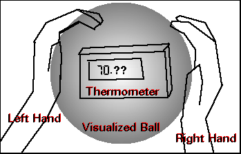

|
Main Training Beginners: What are they? Is this for real? How do I do it? Beginners FAQ Advanced: Now what? How do I do it? Advanced FAQ Other stuff About me Links |
Is this for real? Didn't you read my "What are they" section? Anyways,
here I will present all the things I know for a FACT. None of this -
"Well, this one guy told me" junk, this is personal experieces and
anything else that comes to mind. Sure, you don't have to believe me,
in fact, you don't have to believe anything you read/hear. Frankly,
I don't care if you do believe me or not... Im doing this for you -
don't want to hear it - LEAVE! Sorry
if I was a little harsh. I get carried away sometimes Hardcore Facts (stuff you can't deny)
My Experiences
Heres my only entry in my journal about Psi Balls: One more thing. I can't really PROVE it to you:
When I first started, I was thinking of a way to actually TEST to see
if something was really there. I wanted numbers, not feelings! So, I
tried to change the tempature around this electronic thermometer.
I would cup my hands around it (see figure)
and just make a big Psi Ball, trying to get the tempture to raise or fall.
I succeeded. I could raise it a whole degree (°F) in less than a minute.
I was impressed (and so was my dad Another thing about the tempeture. The other day I was thinking, "What if the heat from my hands, just my body heat, increased the tempeture around the thermometer. Then there wasn't any ball at all!" so I tried something else. I made a ball from across the room and after about 2 minutes of making it I sent it to the thermometer. Right away it went up a tenth of a degree and a like 2 seconds after that it went up 2 tenths of a degree. No, not one tenth at a time, it went from 93.9 to 94.1. That really convinced me that these wern't all in my head. |
 .
. )
)